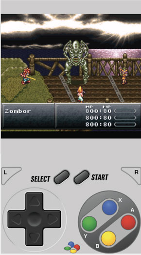
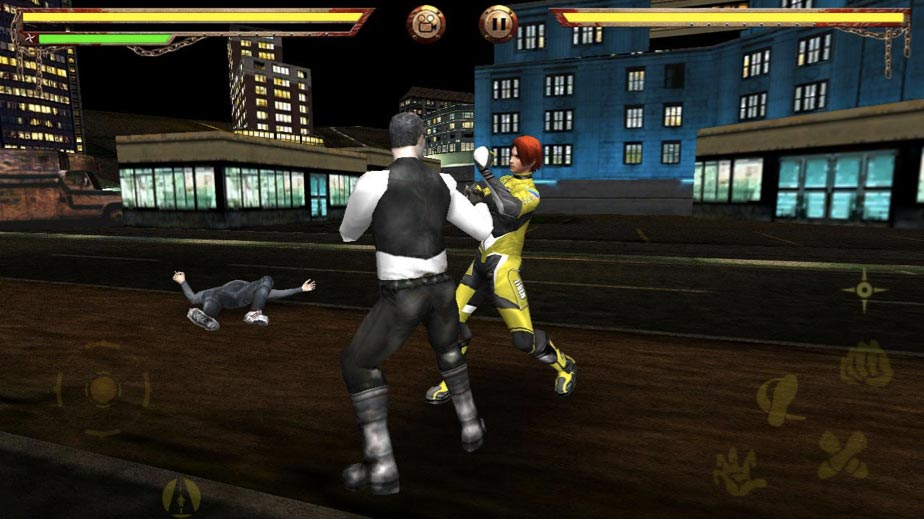
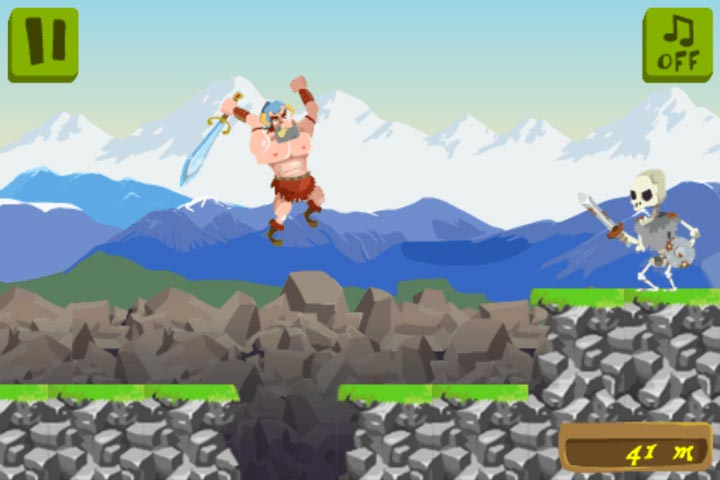
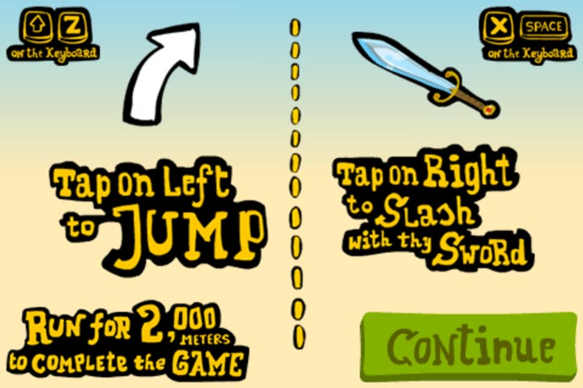

Обработка ввода
В этой главе мы собираемся сделать нашу игру рабочей, добавив процедуры для управления ракеткой. Перед демонстрацией кода мы должны остановиться и немного подумать об управлении игрой.
Действия, которые управляют игрой
Управление может сделать или сломать всю игры. Вы должны обратить особое внимание на реализацию управления в вашей игре и экспериментировать с разными схемами, прежде чем остановиться на решении. Лучше всего создать прототипы вариантов и проверить их на людях.
Распространённой практикой является отведение части экрана под виртуальный геймпад как часть интерфейса. Такое решение использует большую часть экрана, и в отличие от своих реальных аналогов (игровых контроллеров) обеспечивают очень плохую тактильную обратную связь.

Виртуальный геймпад
Другим популярным вариантом является геймпад наложенный поверх игрового экрана и имеющий, как правило, полупрозрачный интерфейс, как показано ниже.

Наложение геймпада
В обоих случаях у вас есть определённые области экрана, на которые нужно нажимать для управления действиями игрока. В некоторых случаях такое управление удобно. В примерах выше это популярный эмулятор видеоигры и у него нет другого способа, как имитировать игровой контроллер. Вторая игра файтер — жанр, который включает в себя много действий в реальном времени и комбинаций кнопок.
Но представьте себе хоть немного, что если бы популярный хит Angry Birds использовал показанную выше схему управления. Вы всё еще играете? Будет ли механика стрельбы из рогатки бедными птичками с помощью виртуального геймпада полезнее натягивания и отпускания резинки? Я твёрдо убеждён, что наглядное/органичное управление лучше всего. Мобильные устройства имеют огромный сенсорный экран, который может быть целиком использован для ввода. Вместо болтов традиционных схем управления в мобильном устройстве мы можем гораздо умнее использовать сенсорный экран.
Ниже мы видим скриншот игры Craigen, в которой бесконечный бегун должен прыгать через препятствия и бить монстров.

Экран Craigen, прыжок и уничтожение монстра
Данный тип игр, как правило, программируется с использованием виртуальных геймпадов или наложения, но у автора появилась идея лучше, как мы можем видеть.

Объяснения по управлению Craigen
Автор просто разделил экран на две половины и касание одной стороны означает прыжок, а другой стороны — удар. Вам не нужно касаться определённой точки, это можно сделать в любом месте на одной или другой половине. Это приводит к приятному опыту и счастливым пользователям.
Соображения по сенсорному вводу
При разработке игр для мобильных устройств с сенсорными экранами вы должны действительно хорошо продумать ненавязчивый способ управления игрой. Выберите топ мобильных игр, посмотрите как они решают эту задачу и спланируйте свою игру соответственно. Есть важные вещи, которые вы должны учитывать.
Палец/рука игрока будет двигаться по экрану и иногда скрывать часть экрана в поле зрения. Старайтесь, чтобы взаимодействия располагались ближе к границе экрана. Если что-то происходит в середине областей, то сделайте так, чтобы игрок мог коснуться и быстро убрать палец, дабы избежать слепых зон.
Остерегайтесь рисовать маленькие предметы для касания. Кончик пальца не очень точен. Если вы размещаете элементы для касания на экране, то старайтесь не располагать их слишком близко друг к другу. Просто вспомните, сколько раз вы набирали неправильное сообщение на виртуальной клавиатуре телефона. Например, если вы делаете игру наподобие Сапёра, то попробуйте использовать большую решётку, чтобы избежать неправильного выбора.
Ввод с клавиатуры
Ввод с клавиатуры довольно прост. Мы должны отметить одну вещь — при написании мобильной игры вы также должны рассмотреть поддержку стандартной клавиатуры. Одним из преимуществ является то, что это помогает при разработке и позволит вам развернуть игру на мобильных и настольных устройствах.
Ввод с геймпада
Геймпады для настольных компьютеров и мобильных устройств становятся всё более популярными у казуальных игроков. Множество контроллеров совместимо с мобильными устройствами; предлагая в своём приложении поддержку таких контроллеров вы получите больше игроков. Существует HTML5 Gamepad API, который вы можете использовать в собственных играх.
Главное что надо знать о геймпадах — это то, что иногда они сильно отличаются друг от друга расположением кнопок. Если вы поддерживаете геймпады, ты должны предложить экран, на котором игрок может изменить конфигурацию контроллера, вроде того, какую кнопку нажать для стрельбы или прыжка. Как анекдот позвольте рассказать вам, что у меня есть дешёвый китайский геймпад, неправильно спаянный (я верю, что произошла ошибка), и у него перевёрнуто направление осей. Я не могу использовать этот контроллер во всех тех играх, которые не позволяют мне поменять направление осей.
Управление нашей игрой
Для краткости мы собираемся реализовать только прикосновения и ввод с клавиатуры. Phaser поддерживает геймпады из коробки, но это выходит за рамки простой игры которую мы строим, потому что я не хочу делать экран настроек в данный момент. Если вы хотите узнать больше об этом API в Phaser, обратитесь к документации по геймпаду.
Что требуется Foxnoid для управления игрой? В сущности игрок управляет ракеткой, которая движется влево или вправо. Как в игре Craigen мы разделим экран на две половины и касание любой половины заставит ракетку двигаться в этом направлении. Также добавим поддержку ввода с клавиатуры с помощью клавиш со стрелками.
Обработка прикосновений
Как объяснялось в главе об игровом цикле мы должны получать данные от игрока на каждом цикле. Это значит, что мы собираемся создать дополнительную функцию в game.js и вызывать её из update().
game.js: функция handleTouchInput()
handleTouchInput: function () {
if (this.input.pointer1.isDown) {
if (this.input.pointer1.worldX > 160) {
this.player.body.velocity.x = this.playerSpeed;
}
if (this.input.pointer1.worldX <= 160) {
this.player.body.velocity.x = -1 * this.playerSpeed;
}
}
}Для обработки прикосновений мы используем шаблоны Phaser Input. Чтобы узнать о них больше, обратитесь к документации Phaser.Input.
По умолчанию Phaser поддерживает ввод двумя пальцами, прикосновение первого пальца привязано к this.input.pointer1, если второй палец в это же время касается экрана, то он привязан к this.input.pointer2. В нашем случае требуется единственное касание на одной или другой стороне экрана. Так что мы просто проверяем this.input.pointer1.
Свойства this.input.pointer1.worldX дают нам координаты по оси X, где произошло касание. Так как наш игровой мир имеет ширину 320 пикселей, то легко выяснить, какой стороны коснулся игрок. В зависимости от стороны мы задаём скорость ракетки в том же направлении. Значение этой скорости находится в константе this.playerSpeed, указанной в функции this.initWorld().
Система Arcade Physics, используемая в Phaser, вычисляет положение ракетки на основе её скорости. Вот в чём красота проверенных фреймворков — не приходится больше возиться с формулами из физики.
Ввод с клавиатуры
Код для клавиатуры очень похож на один из приведённых выше, в том смысле, что мы просто проверяем, какую стрелку на клавиатуре нажал игрок, а затем задаём скорость ракетки.
У Phaser есть удобный способ для настройки обработчика клавиатуры, включая стрелки. Мы можем использовать его вместо регистрации каждой клавиши для отслеживания. Можно воспользоваться и обычным слушателем событий HTML, но поскольку у нас есть Phaser, то применим собственные функции, потому что они красиво привязаны к остальному циклу через update().
game.js: функция handleKeyboardInput()
handleKeyboardInput: function () {
if (this.cursors.right.isDown) {
this.player.body.velocity.x = this.playerSpeed;
}
if (this.cursors.left.isDown) {
this.player.body.velocity.x = -1 * this.playerSpeed;
}
}Чтобы использовать этот код, мы должны кое-что добавить в функцию initWorld(). Следует сказать Phaser настроить менеджер клавиатуры для нашей работы со стрелками.
game.js: новая функция initWorld()
initWorld: function() {
// Некоторые константы
this.playerSpeed = 250;
this.ballSpeed = 220;
this.blocksPerRow = 5;
this.blockRows = 4;
this.playerLives = 13;
// Добавляем фон
this.add.sprite(0, 0, 'background');
// Добавляем ввод с клавиатуры
this.cursors = this.input.keyboard.createCursorKeys();
}С этой строкой в конце initWorld() мы сможем проверить this.cursors в функции update(). Без этого изменения в initWorld() переменная this.cursors будет undefined. Чтобы узнать больше о вводе с клавиатуры посмотрите документацию по Phaser.Keyboard.
Функция update()
Вот как функция update() выглядит с новыми шаблонами ввода.
game.js: новая функция update()
update: function() {
this.handleTouchInput();
this.handleKeyboardInput();
this.checkHitWithBlocks();
this.checkHitWithPlayer();
this.ballCollidesWithGround();
}Теперь в нашу игра можно играть!
Резюме
В этой главе вы узнали об обработчиках ввода, а также почему вы должны рассмотреть схемы управления игроком перед созданием своей игры. Мы добавили в Foxnoid управление через клавиатуру и сенсорные нажатия. В Foxnoid теперь можно играть, но у нас пока нет сценариев победы и поражения.
В следующей главе мы собираемся добавить в игру Foxnoid состояния победы и проигрыша.

Все материалы сайта доступны по лицензии Creative Commons «Attribution-NonCommercial» («Атрибуция — Некоммерческое использование») 4.0 Всемирная, если не указано иное.